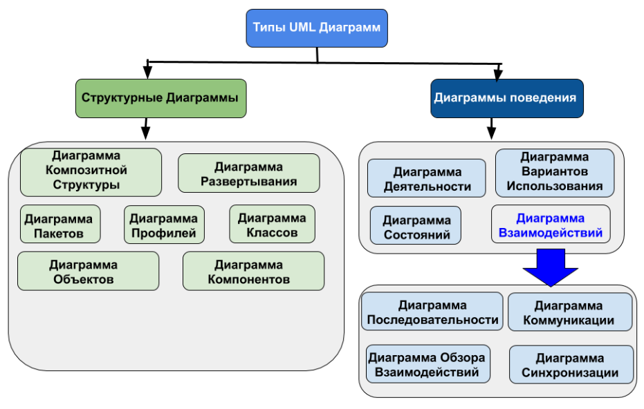

Существует множество технологий и инструментальных средств, с помощью которых можно реализовать в некотором смысле оптимальный проект ИС, начиная с этапа анализа и заканчивая созданием программного кода системы. В большинстве случаев эти технологии предъявляют весьма жесткие требования к процессу разработки и используемым ресурсам, а попытки трансформировать их под конкретные проекты оказываются безуспешными.
Эти технологии представлены CASE-средствами верхнего уровня или CASE-средствами полного жизненного цикла (upper CASE tools или fulllifecycle CASE tools). Они не позволяют оптимизировать деятельность на уровне отдельных элементов проекта, и, как следствие, многие разработчики перешли на так называемые CASE-средства нижнего уровня (lower CASE tools). Однако они столкнулись с новой проблемой — проблемой организации взаимодействия между различными командами, реализующими проект
Унифицированный язык объектно-ориентированного моделирования UnifiedModelingLanguage (UML) явился средством достижения компромисса между этими подходами. Существует достаточное количество инструментальных средств, поддерживающих с помощью UML жизненный цикл информационных систем, и, одновременно, UML является достаточно гибким для настройки и поддержки специфики деятельности различных команд разработчиков.
UML представляет собой объектно-ориентированный
язык моделирования, обладающий следующими основными характеристиками:
- является языком визуального моделирования, который
обеспечивает разработку репрезентативных моделей для
организации взаимодействия заказчика и разработчика ИС,
различных групп разработчиков ИС;
- содержит механизмы расширения и специализации базовых
концепций языка.
UML — это стандартная нотация визуального моделирования программных систем, принятая консорциумом ObjectManagingGroup (OMG), и на сегодняшний день она поддерживается многими объектно-ориентированными CASE-продуктами
UML включает внутренний набор средств моделирования, которые сейчас приняты во многих методах и средствах моделирования. Эти концепции необходимы в большинстве прикладных задач, хотя не каждая концепция необходима в каждой части каждого приложения.
Пользователям языка предоставлены возможности:
- строить модели на основе средств ядра, без использования
механизмов расширения для большинства типовых приложений;
- добавлять при необходимости новые элементы и условные
обозначения, если они не входят в ядро, или специализировать
компоненты, систему условных обозначений (нотацию) и
ограничения для конкретных предметных областей
Диаграммы UML подразделяют на два типа — это структурные диаграммы и диаграммы поведения.
Структурные диаграммы показывают статическую структуру системы и ее частей на разных уровнях абстракции и реализации, а также их взаимосвязь. Элементы в структурной диаграмме представляют значимые понятия системы и могут включать в себя абстрактные, реальные концепции и концепции реализации. Существует семь типов структурных диаграмм:
Диаграммы поведения показывают динамическое поведение объектов в системе, которое можно описать, как серию изменений в системе с течением времени. А к диаграммам поведения относятся:
Унифицированный язык моделирования UML1 (Unified Modeling Language) представляет собой язык для определения, представления, проектирования и документирования программных систем, организационно-экономических систем, технических систем и других систем различной природы. UML содержит стандартный набор диаграмм и нотаций самых разнообразных видов.